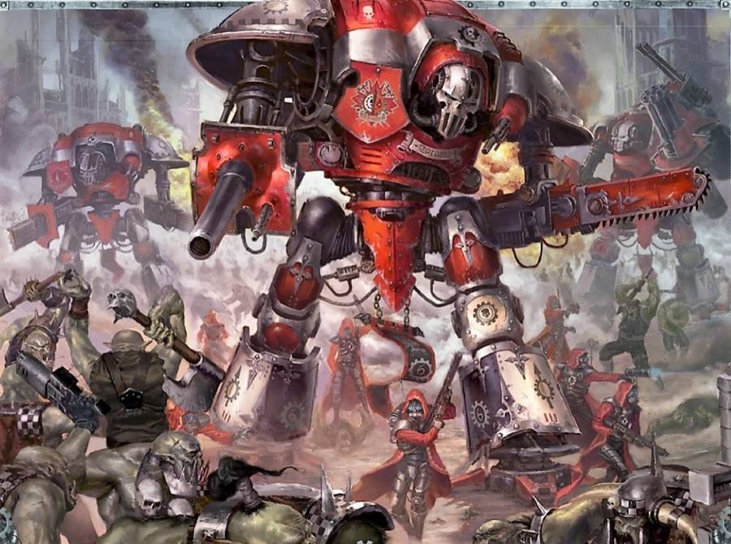

Imperial Knight
| Imperial Knight | |
|---|---|
 The Freeblade Canis Rex, piloted by Sir Hekthur, in battle beside the Astra Militarum Artwork © Games Workshop | |
| Type | Bipedal war machine piloted by a single noble |
| Origin | Standard Template Construct designs of the Dark Age of Technology, c. M15 – M25 |
| Height | About 12 metres (Questoris class) |
| Pilot interface | The Throne Mechanicum |
| Protection | Ion shield; adamantine armour |
| Allegiances | Questor Imperialis (to Terra); Questor Mechanicus (to Mars); Freeblades; renegade houses to Chaos |
| Classes | Armiger, Questoris, Cerastus, Dominus, Acastus |
| Notable houses | Terryn, Griffith, Hawkshroud, Cadmus, Mortan (Imperialis); Taranis, Raven, Krast, Vulker (Mechanicus) |
| Homeworlds | Knight worlds |
An Imperial Knight is a towering walking war machine piloted by a member of the nobility of a Knight world. Smaller than a Titan but far larger and more powerful than any tank, a Knight of the common Questoris class stands about twelve metres tall, is protected by an ion shield and carries weapons able to destroy armoured formations and monsters alike. Each is linked to its pilot through the Throne Mechanicum, an interface that binds the pilot's mind to the machine and to the memories of all who piloted it before.[1][2]
Knights are organised in noble houses, each ruling a Knight world. Houses sworn to the Imperium are known collectively as the Questor Imperialis; those sworn to Mars and the Adeptus Mechanicus as the Questor Mechanicus. Knights who leave their houses to fight alone are called Freeblades. Houses that betrayed the Imperium in the Horus Heresy, or have fallen since, field the Chaos Knights.[1]
History
[edit]Dark Age of Technology
[edit]The Knight suits were designed in the Dark Age of Technology (c. M15 – M25) for colonists settling hostile worlds. Each colony fleet carried Standard Template Construct designs for them, and the pilots defended the new settlements against native predators and helped work the land. When the warp storms of the Age of Strife (c. M25 – M30) cut off the colonies, the families of the pilots became a hereditary nobility and their worlds became feudal realms built around their machines.[1][3]
Rediscovery
[edit]House Taranis of Mars was the first Knight house to meet the Emperor of Mankind, when its Knight Taymon Verticorda greeted him on his arrival on Mars before the Treaty of Olympus of 739.M30. During the Great Crusade (798.M30 – 000.M31) the Mechanicum and the Imperium rediscovered more than a hundred Knight houses. The Mechanicum, which alone could maintain the Knights' machines, claimed exclusive trading rights with many of them, and these became the Questor Mechanicus. Others swore directly to the Emperor and became the Questor Imperialis. The Knight world of Chrysis was rediscovered around 850.M30.[1][a]
Horus Heresy
[edit]The Heresy (005–014.M31) divided the Knight houses. On Molech, in 009.M31, House Devine betrayed the Imperium to Horus, and its defection decided the battle; it became one of the first houses of Chaos Knights. Other houses fought at the Titandeath and at the Siege of Terra.[1][4]
After the Heresy
[edit]Imperial Knights have fought in nearly every great war of the Imperium since. They fought against the Orks in the War of the Beast of 544–546.M32. In 550.M37 several houses fought in the Occlusiad War against the heretek known as the Blind King. The Knight world of Kragh was found again in 112.M41, after a warp storm of more than twenty thousand years abated.[1]
Era Indomitus
[edit]The opening of the Great Rift in 999.M41 cut many Knight worlds off from Terra and Mars, and some fell to Chaos. Knight houses have joined the Indomitus Crusade in large numbers, and House Taranis was among the Mechanicus forces that sailed with its fleets. Renegade houses have appeared along the Rift, including House Mandrakor of Dharrovar on the Nachmund Gauntlet.[5]

The Knight and the pilot
[edit]The Throne Mechanicum
[edit]The pilot of a Knight, its Noble, sits in a cockpit called the Throne Mechanicum, which connects his nervous system to the machine. The Throne also contains the imprinted minds of its previous pilots, which advise and influence the present one. Over generations this has made the Knight houses deeply conservative and loyal to tradition, and it is the reason most of them distrust psykers, whose presence the Throne resists.[1]
The Ritual of Becoming
[edit]A young noble is bonded to a Throne Mechanicum in the Ritual of Becoming. The ritual is dangerous, and some aspirants are driven mad or killed by the minds in the Throne. Those who survive become Knights and take their place in their house.[1]
Classes
[edit]| Class | Size and role | Patterns |
|---|---|---|
| Armiger | Light Knights, piloted by Bondsmen of lesser rank and linked to a greater Knight | Helverin, Warglaive, Moirax |
| Questoris | The standard Knight, about 12 metres tall | Paladin, Errant, Warden, Gallant, Crusader, Preceptor |
| Cerastus | Fast, lightly armoured Knights of an older pattern | Lancer, Castigator, Acheron, Atrapos |
| Dominus | Heavy Knights powered by twin plasma reactors | Castellan, Valiant |
| Acastus | The heaviest Knights, bearing super-heavy weapons | Porphyrion, Asterius |

Organisation
[edit]Houses
[edit]Each Knight house is ruled by a High Monarch (in Questor Imperialis houses) or a Princeps (in Questor Mechanicus houses), with a court of senior nobles and a body of Knights and Armigers. A house usually rules a Knight world and provides Knights to the Imperium or to Mars as its tithe. Houses of the Questor Imperialis are bound by oaths to Terra; those of the Questor Mechanicus by pacts with Mars and with the forge worlds that maintain their machines.[1]
| House | Allegiance | Homeworld |
|---|---|---|
| Terryn | Questor Imperialis | Alaric Prime |
| Griffith | Questor Imperialis | Voltoris |
| Cadmus | Questor Imperialis | Hetrax |
| Taranis | Questor Mechanicus | Mars |
| Raven | Questor Mechanicus | Kimdaria |
| Krast | Questor Mechanicus | Chrysis |
| Devine | Chaos (since 009.M31) | Molech |
Freeblades
[edit]Some Knights leave their houses, through disgrace, the destruction of their house or a personal oath, and fight alone as Freeblades. They often hide their identity and heraldry. The best known in the late 41st and early 42nd millennia is Canis Rex, piloted by Sir Hekthur.[1]
Chaos Knights
[edit]Houses that turned traitor in the Heresy, and others corrupted since, field Chaos Knights. Their machines have been altered by the Dark Mechanicum and the Throne Mechanicum often holds daemons as well as the spirits of past pilots. They are classed by the Imperium as Traitoris.[1]
Timeline
[edit]| Date | Event |
|---|---|
| c. M15 – M25 | Knight suits designed; Knight worlds settled |
| c. M25 – M30 | The Age of Strife; Knight worlds become feudal realms |
| Before 739.M30 | House Taranis meets the Emperor on Mars |
| c. 850.M30 | Chrysis rediscovered |
| 009.M31 | House Devine betrays Molech |
| 544–546.M32 | Knights fight in the War of the Beast |
| 550.M37 | The Occlusiad War begins |
| 112.M41 | Kragh found again |
| 999.M41 – M42 | The Great Rift; Knights join the Indomitus Crusade |
See also
[edit]Notes
[edit]- ^ The date of Taymon Verticorda's meeting with the Emperor is not recorded. It is placed before the Treaty of Olympus from the sequence of events.
References
[edit]- ^ a b c d e f g h i j k Codex: Imperial Knights (10th Edition), pp. 18, 27. Games Workshop. Codex: Imperial Knights (9th Edition), pp. 20, 86. Games Workshop.
- ^ Clark, Andy. Kingsblade (novel). Black Library, Ch. 9. Haley, Guy. Titandeath (novel). Black Library, Chs. 1, 5, 18.
- ^ Dembski-Bowden, Aaron. The Master of Mankind (novel). Black Library, Chs. 3, 8, 12, 15, 17, 20, 22, 24. French, John. Tallarn: Ironclad (novella). Black Library, pg. 98.
- ^ Rath, Robert. Assassinorum: Kingmaker (novel). Black Library, Chs. 15, 17, 33. Codex: Adeptus Mechanicus (8th Edition), pp. 7, 26-31, 57. Games Workshop.
- ^ Codex: Chaos Knights (8th Edition), pp. 14-23, 30, 38. Games Workshop. Codex: Imperial Knights (8th Edition), pp. 3-55. Games Workshop.